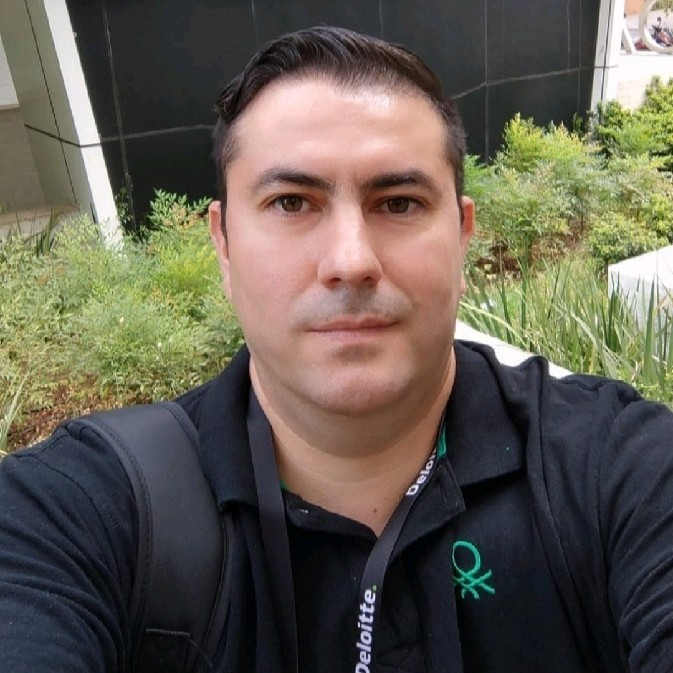

Sobre Erwin Daza Castillo
CAIO Advisor · Data & AI Architect · AI Governance Strategist

Erwin Daza Castillo
CAIO Advisor | Data & AI Architect | AI Governance Strategist
Ver perfil en LinkedIn →Fundador de AIF369 y creador del Método 369, un framework propietario que estructura la adopción de IA en 3 Capas de Dirección, 6 Fases de Transformación y 9 Módulos de Control CAIO.
Más de 15 años liderando iniciativas de datos, cloud e inteligencia artificial en empresas de Latinoamérica — desde startups hasta corporaciones reguladas. Ha diseñado y desplegado AI Factories, plataformas de datos y modelos de gobierno de IA para industrias como banca, retail, energía y salud.
Su enfoque combina visión estratégica con ejecución técnica: cada recomendación tiene un entregable concreto, un responsable y una métrica de impacto.
Áreas de enfoque
- Estrategia y gobierno de IA con el Método 369
- AI Risk, Privacy & Compliance
- AI Factory Design: arquitectura, MLOps/LLMOps, observabilidad
- Executive advisory: CAIO as a Service
- Regulación: EU AI Act (referencia) y legislación chilena de IA
¿Quieres conversar?
Coordina una conversación para explorar cómo el Método 369 puede ayudar a tu organización.